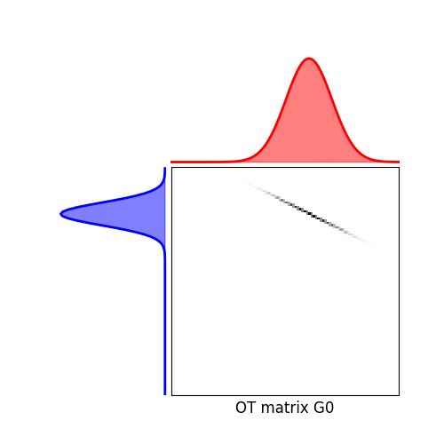

Note
Go to the end to download the full example code.
Regularized OT with generic solver
Illustrates the use of the generic solver for regularized OT with user-designed regularization term. It uses Conditional gradient as in [6] and generalized Conditional Gradient as proposed in [5,7].
[5] N. Courty; R. Flamary; D. Tuia; A. Rakotomamonjy, Optimal Transport for Domain Adaptation, in IEEE Transactions on Pattern Analysis and Machine Intelligence , vol.PP, no.99, pp.1-1.
[6] Ferradans, S., Papadakis, N., Peyré, G., & Aujol, J. F. (2014). Regularized discrete optimal transport. SIAM Journal on Imaging Sciences, 7(3), 1853-1882.
[7] Rakotomamonjy, A., Flamary, R., & Courty, N. (2015). Generalized conditional gradient: analysis of convergence and applications. arXiv preprint arXiv:1510.06567.
# sphinx_gallery_thumbnail_number = 5
import numpy as np
import matplotlib.pylab as pl
import ot
import ot.plot
Generate data
Solve EMD
(<Axes: >, <Axes: >, <Axes: >)
Solve EMD with Frobenius norm regularization
It. |Loss |Relative loss|Absolute loss
------------------------------------------------
0|1.760578e-01|0.000000e+00|0.000000e+00
1|1.669467e-01|5.457501e-02|9.111116e-03
2|1.665639e-01|2.298130e-03|3.827855e-04
3|1.664378e-01|7.572776e-04|1.260396e-04
4|1.664077e-01|1.811855e-04|3.015066e-05
5|1.663912e-01|9.936787e-05|1.653393e-05
6|1.663852e-01|3.555826e-05|5.916369e-06
7|1.663814e-01|2.305693e-05|3.836245e-06
8|1.663785e-01|1.760450e-05|2.929009e-06
9|1.663767e-01|1.078011e-05|1.793559e-06
10|1.663751e-01|9.525192e-06|1.584755e-06
11|1.663737e-01|8.396466e-06|1.396951e-06
12|1.663727e-01|6.086938e-06|1.012700e-06
13|1.663720e-01|4.042609e-06|6.725769e-07
14|1.663713e-01|4.160914e-06|6.922568e-07
15|1.663707e-01|3.823502e-06|6.361187e-07
16|1.663702e-01|3.022440e-06|5.028438e-07
17|1.663697e-01|3.181249e-06|5.292634e-07
18|1.663692e-01|2.698532e-06|4.489527e-07
19|1.663687e-01|3.258253e-06|5.420712e-07
It. |Loss |Relative loss|Absolute loss
------------------------------------------------
20|1.663682e-01|2.741118e-06|4.560349e-07
21|1.663678e-01|2.624135e-06|4.365715e-07
22|1.663673e-01|2.645179e-06|4.400714e-07
23|1.663670e-01|1.957237e-06|3.256196e-07
24|1.663666e-01|2.261541e-06|3.762450e-07
25|1.663663e-01|1.851305e-06|3.079948e-07
26|1.663660e-01|1.942296e-06|3.231320e-07
27|1.663657e-01|2.092896e-06|3.481860e-07
28|1.663653e-01|1.924361e-06|3.201470e-07
29|1.663651e-01|1.625455e-06|2.704189e-07
30|1.663648e-01|1.641123e-06|2.730250e-07
31|1.663645e-01|1.566666e-06|2.606377e-07
32|1.663643e-01|1.338514e-06|2.226810e-07
33|1.663641e-01|1.222711e-06|2.034152e-07
34|1.663639e-01|1.221805e-06|2.032642e-07
35|1.663637e-01|1.440781e-06|2.396935e-07
36|1.663634e-01|1.520091e-06|2.528875e-07
37|1.663632e-01|1.288193e-06|2.143080e-07
38|1.663630e-01|1.123055e-06|1.868347e-07
39|1.663628e-01|1.024487e-06|1.704365e-07
It. |Loss |Relative loss|Absolute loss
------------------------------------------------
40|1.663627e-01|1.079606e-06|1.796061e-07
41|1.663625e-01|1.172093e-06|1.949922e-07
42|1.663623e-01|1.047880e-06|1.743277e-07
43|1.663621e-01|1.010577e-06|1.681217e-07
44|1.663619e-01|1.064438e-06|1.770820e-07
45|1.663618e-01|9.882375e-07|1.644049e-07
46|1.663616e-01|8.532647e-07|1.419505e-07
47|1.663615e-01|9.930189e-07|1.652001e-07
48|1.663613e-01|8.728955e-07|1.452161e-07
49|1.663612e-01|9.524214e-07|1.584459e-07
50|1.663610e-01|9.088418e-07|1.511958e-07
51|1.663609e-01|7.639430e-07|1.270902e-07
52|1.663608e-01|6.662611e-07|1.108397e-07
53|1.663607e-01|7.133700e-07|1.186767e-07
54|1.663605e-01|7.648141e-07|1.272349e-07
55|1.663604e-01|6.557516e-07|1.090911e-07
56|1.663603e-01|7.304213e-07|1.215131e-07
57|1.663602e-01|6.353809e-07|1.057021e-07
58|1.663601e-01|7.968279e-07|1.325603e-07
59|1.663600e-01|6.367159e-07|1.059240e-07
It. |Loss |Relative loss|Absolute loss
------------------------------------------------
60|1.663599e-01|5.610790e-07|9.334102e-08
61|1.663598e-01|5.787466e-07|9.628015e-08
62|1.663596e-01|6.937777e-07|1.154166e-07
63|1.663596e-01|5.599432e-07|9.315190e-08
64|1.663595e-01|5.813048e-07|9.670555e-08
65|1.663594e-01|5.724600e-07|9.523409e-08
66|1.663593e-01|6.081892e-07|1.011779e-07
67|1.663592e-01|5.948732e-07|9.896260e-08
68|1.663591e-01|4.941833e-07|8.221188e-08
69|1.663590e-01|5.213739e-07|8.673523e-08
70|1.663589e-01|5.127355e-07|8.529811e-08
71|1.663588e-01|4.349251e-07|7.235363e-08
72|1.663588e-01|5.007084e-07|8.329722e-08
73|1.663587e-01|4.880265e-07|8.118744e-08
74|1.663586e-01|4.931950e-07|8.204723e-08
75|1.663585e-01|4.981309e-07|8.286832e-08
76|1.663584e-01|3.952959e-07|6.576082e-08
77|1.663584e-01|4.544857e-07|7.560750e-08
78|1.663583e-01|4.237579e-07|7.049564e-08
79|1.663582e-01|4.382386e-07|7.290460e-08
It. |Loss |Relative loss|Absolute loss
------------------------------------------------
80|1.663582e-01|3.646051e-07|6.065503e-08
81|1.663581e-01|4.197994e-07|6.983702e-08
82|1.663580e-01|4.072764e-07|6.775370e-08
83|1.663580e-01|3.994645e-07|6.645410e-08
84|1.663579e-01|4.842721e-07|8.056248e-08
85|1.663578e-01|3.276486e-07|5.450691e-08
86|1.663578e-01|3.737346e-07|6.217366e-08
87|1.663577e-01|4.282043e-07|7.123508e-08
88|1.663576e-01|4.020937e-07|6.689135e-08
89|1.663576e-01|3.431951e-07|5.709310e-08
90|1.663575e-01|3.052335e-07|5.077789e-08
91|1.663575e-01|3.500538e-07|5.823407e-08
92|1.663574e-01|3.063176e-07|5.095821e-08
93|1.663573e-01|3.576367e-07|5.949549e-08
94|1.663573e-01|3.224681e-07|5.364492e-08
95|1.663572e-01|3.673221e-07|6.110670e-08
96|1.663572e-01|3.635561e-07|6.048017e-08
97|1.663571e-01|3.527236e-07|5.867807e-08
98|1.663571e-01|2.788548e-07|4.638946e-08
99|1.663570e-01|2.727141e-07|4.536791e-08
It. |Loss |Relative loss|Absolute loss
------------------------------------------------
100|1.663570e-01|3.127278e-07|5.202445e-08
101|1.663569e-01|2.637504e-07|4.387670e-08
102|1.663569e-01|2.922750e-07|4.862195e-08
103|1.663568e-01|3.076454e-07|5.117891e-08
104|1.663568e-01|2.911509e-07|4.843492e-08
105|1.663567e-01|2.403398e-07|3.998215e-08
106|1.663567e-01|2.439790e-07|4.058755e-08
107|1.663567e-01|2.634542e-07|4.382735e-08
108|1.663566e-01|2.452203e-07|4.079401e-08
109|1.663566e-01|2.852991e-07|4.746137e-08
110|1.663565e-01|2.165490e-07|3.602434e-08
111|1.663565e-01|2.450250e-07|4.076149e-08
112|1.663564e-01|2.685294e-07|4.467159e-08
113|1.663564e-01|2.821800e-07|4.694245e-08
114|1.663564e-01|2.237390e-07|3.722040e-08
115|1.663563e-01|1.992842e-07|3.315219e-08
116|1.663563e-01|2.166739e-07|3.604506e-08
117|1.663563e-01|2.086064e-07|3.470297e-08
118|1.663562e-01|2.435945e-07|4.052346e-08
119|1.663562e-01|2.292497e-07|3.813711e-08
It. |Loss |Relative loss|Absolute loss
------------------------------------------------
120|1.663561e-01|2.366209e-07|3.936334e-08
121|1.663561e-01|2.138746e-07|3.557935e-08
122|1.663561e-01|2.009637e-07|3.343153e-08
123|1.663560e-01|2.386258e-07|3.969683e-08
124|1.663560e-01|1.927442e-07|3.206415e-08
125|1.663560e-01|2.081681e-07|3.463000e-08
126|1.663559e-01|1.759123e-07|2.926406e-08
127|1.663559e-01|1.890771e-07|3.145409e-08
128|1.663559e-01|1.971315e-07|3.279398e-08
129|1.663558e-01|2.101983e-07|3.496771e-08
130|1.663558e-01|2.035645e-07|3.386414e-08
131|1.663558e-01|1.984492e-07|3.301317e-08
132|1.663557e-01|1.849064e-07|3.076024e-08
133|1.663557e-01|1.795703e-07|2.987255e-08
134|1.663557e-01|1.624087e-07|2.701762e-08
135|1.663557e-01|1.689557e-07|2.810673e-08
136|1.663556e-01|1.644308e-07|2.735399e-08
137|1.663556e-01|1.618007e-07|2.691644e-08
138|1.663556e-01|1.483013e-07|2.467075e-08
139|1.663555e-01|1.708771e-07|2.842636e-08
It. |Loss |Relative loss|Absolute loss
------------------------------------------------
140|1.663555e-01|2.013847e-07|3.350146e-08
141|1.663555e-01|1.721217e-07|2.863339e-08
142|1.663554e-01|2.027911e-07|3.373540e-08
143|1.663554e-01|1.764565e-07|2.935449e-08
144|1.663554e-01|1.677151e-07|2.790030e-08
145|1.663554e-01|1.351982e-07|2.249094e-08
146|1.663553e-01|1.423360e-07|2.367836e-08
147|1.663553e-01|1.541112e-07|2.563722e-08
148|1.663553e-01|1.491601e-07|2.481358e-08
149|1.663553e-01|1.466407e-07|2.439446e-08
150|1.663552e-01|1.801524e-07|2.996929e-08
151|1.663552e-01|1.714107e-07|2.851507e-08
152|1.663552e-01|1.491257e-07|2.480784e-08
153|1.663552e-01|1.513799e-07|2.518282e-08
154|1.663551e-01|1.354539e-07|2.253345e-08
155|1.663551e-01|1.233818e-07|2.052519e-08
156|1.663551e-01|1.576219e-07|2.622121e-08
157|1.663551e-01|1.452791e-07|2.416792e-08
158|1.663550e-01|1.262867e-07|2.100843e-08
159|1.663550e-01|1.316379e-07|2.189863e-08
It. |Loss |Relative loss|Absolute loss
------------------------------------------------
160|1.663550e-01|1.295447e-07|2.155041e-08
161|1.663550e-01|1.283286e-07|2.134810e-08
162|1.663550e-01|1.569222e-07|2.610479e-08
163|1.663549e-01|1.172942e-07|1.951247e-08
164|1.663549e-01|1.399809e-07|2.328651e-08
165|1.663549e-01|1.229432e-07|2.045221e-08
166|1.663549e-01|1.326191e-07|2.206184e-08
167|1.663548e-01|1.209694e-07|2.012384e-08
168|1.663548e-01|1.372136e-07|2.282614e-08
169|1.663548e-01|1.338395e-07|2.226484e-08
170|1.663548e-01|1.416497e-07|2.356410e-08
171|1.663548e-01|1.298576e-07|2.160242e-08
172|1.663547e-01|1.190590e-07|1.980603e-08
173|1.663547e-01|1.167083e-07|1.941497e-08
174|1.663547e-01|1.069425e-07|1.779038e-08
175|1.663547e-01|1.217780e-07|2.025834e-08
176|1.663547e-01|1.140754e-07|1.897697e-08
177|1.663546e-01|1.160707e-07|1.930890e-08
178|1.663546e-01|1.101798e-07|1.832892e-08
179|1.663546e-01|1.114904e-07|1.854694e-08
It. |Loss |Relative loss|Absolute loss
------------------------------------------------
180|1.663546e-01|1.064022e-07|1.770049e-08
181|1.663546e-01|9.258231e-08|1.540149e-08
182|1.663546e-01|1.213120e-07|2.018080e-08
183|1.663545e-01|1.164296e-07|1.936859e-08
184|1.663545e-01|1.188762e-07|1.977559e-08
185|1.663545e-01|9.394153e-08|1.562760e-08
186|1.663545e-01|1.028656e-07|1.711216e-08
187|1.663545e-01|1.115348e-07|1.855431e-08
188|1.663544e-01|9.768310e-08|1.625002e-08
189|1.663544e-01|1.021806e-07|1.699820e-08
190|1.663544e-01|1.086303e-07|1.807113e-08
191|1.663544e-01|9.879008e-08|1.643416e-08
192|1.663544e-01|1.050210e-07|1.747071e-08
193|1.663544e-01|1.002463e-07|1.667641e-08
194|1.663543e-01|1.062747e-07|1.767925e-08
195|1.663543e-01|9.348538e-08|1.555170e-08
196|1.663543e-01|7.992512e-08|1.329589e-08
197|1.663543e-01|9.558020e-08|1.590018e-08
198|1.663543e-01|9.993772e-08|1.662507e-08
199|1.663543e-01|8.588499e-08|1.428734e-08
It. |Loss |Relative loss|Absolute loss
------------------------------------------------
200|1.663543e-01|8.737134e-08|1.453459e-08
(<Axes: >, <Axes: >, <Axes: >)
Solve EMD with entropic regularization
It. |Loss |Relative loss|Absolute loss
------------------------------------------------
0|1.692289e-01|0.000000e+00|0.000000e+00
1|1.617643e-01|4.614437e-02|7.464513e-03
2|1.612633e-01|3.106799e-03|5.010127e-04
3|1.611082e-01|9.630037e-04|1.551478e-04
4|1.610190e-01|5.537206e-04|8.915955e-05
5|1.610030e-01|9.967414e-05|1.604783e-05
6|1.609963e-01|4.142905e-05|6.669924e-06
7|1.609932e-01|1.949356e-05|3.138329e-06
8|1.609900e-01|1.989585e-05|3.203033e-06
9|1.609889e-01|6.753548e-06|1.087246e-06
10|1.609818e-01|4.366410e-05|7.029127e-06
11|1.609805e-01|8.458840e-06|1.361708e-06
12|1.609691e-01|7.044052e-05|1.133875e-05
13|1.609281e-01|2.550021e-04|4.103701e-05
14|1.609163e-01|7.346394e-05|1.182154e-05
15|1.609087e-01|4.701438e-05|7.565024e-06
16|1.609031e-01|3.465400e-05|5.575938e-06
17|1.609013e-01|1.163497e-05|1.872081e-06
18|1.608860e-01|9.495884e-05|1.527755e-05
19|1.608805e-01|3.394035e-05|5.460343e-06
It. |Loss |Relative loss|Absolute loss
------------------------------------------------
20|1.608774e-01|1.937884e-05|3.117618e-06
21|1.608761e-01|8.413843e-06|1.353586e-06
22|1.608734e-01|1.680885e-05|2.704097e-06
23|1.608707e-01|1.655145e-05|2.662643e-06
24|1.608673e-01|2.144001e-05|3.448996e-06
25|1.608664e-01|4.985796e-06|8.020473e-07
26|1.608637e-01|1.683119e-05|2.707527e-06
27|1.608636e-01|9.881179e-07|1.589522e-07
28|1.608632e-01|2.514784e-06|4.045361e-07
29|1.608600e-01|1.986679e-05|3.195771e-06
30|1.608433e-01|1.039776e-04|1.672410e-05
31|1.608364e-01|4.291730e-05|6.902662e-06
32|1.608330e-01|2.106010e-05|3.387158e-06
33|1.608329e-01|5.732018e-07|9.218969e-08
34|1.608313e-01|9.490397e-06|1.526353e-06
35|1.608300e-01|8.211369e-06|1.320635e-06
36|1.608243e-01|3.532462e-05|5.681058e-06
37|1.608237e-01|3.839356e-06|6.174595e-07
38|1.608224e-01|8.249817e-06|1.326755e-06
39|1.608215e-01|5.580337e-06|8.974381e-07
It. |Loss |Relative loss|Absolute loss
------------------------------------------------
40|1.608165e-01|3.114761e-05|5.009049e-06
41|1.608117e-01|2.961099e-05|4.761794e-06
42|1.608089e-01|1.733572e-05|2.787738e-06
43|1.608088e-01|7.456995e-07|1.199151e-07
44|1.608076e-01|7.513893e-06|1.208291e-06
45|1.608073e-01|1.830771e-06|2.944014e-07
46|1.608059e-01|8.658928e-06|1.392407e-06
47|1.608024e-01|2.224327e-05|3.576771e-06
48|1.608023e-01|3.366487e-07|5.413388e-08
49|1.607999e-01|1.522281e-05|2.447826e-06
50|1.607966e-01|2.023292e-05|3.253384e-06
51|1.607963e-01|1.606772e-06|2.583631e-07
52|1.607963e-01|2.065525e-07|3.321288e-08
53|1.607889e-01|4.577581e-05|7.360245e-06
54|1.607889e-01|6.259349e-09|1.006434e-09
55|1.607874e-01|9.819859e-06|1.578909e-06
56|1.607832e-01|2.610088e-05|4.196582e-06
57|1.607793e-01|2.390504e-05|3.843436e-06
58|1.607764e-01|1.833813e-05|2.948338e-06
59|1.607737e-01|1.695521e-05|2.725951e-06
It. |Loss |Relative loss|Absolute loss
------------------------------------------------
60|1.607714e-01|1.401053e-05|2.252492e-06
61|1.607698e-01|9.920917e-06|1.594984e-06
62|1.607680e-01|1.105028e-05|1.776532e-06
63|1.607671e-01|5.665211e-06|9.107797e-07
64|1.607645e-01|1.649076e-05|2.651129e-06
65|1.607635e-01|6.071597e-06|9.760911e-07
66|1.607627e-01|4.694297e-06|7.546680e-07
67|1.607609e-01|1.162297e-05|1.868519e-06
68|1.607595e-01|8.520224e-06|1.369707e-06
69|1.607580e-01|9.496936e-06|1.526708e-06
70|1.607579e-01|7.288742e-07|1.171723e-07
71|1.607566e-01|7.948458e-06|1.277767e-06
72|1.607558e-01|4.528923e-06|7.280509e-07
73|1.607556e-01|1.361733e-06|2.189063e-07
74|1.607554e-01|1.569794e-06|2.523528e-07
75|1.607551e-01|1.652715e-06|2.656824e-07
76|1.607541e-01|6.206694e-06|9.977516e-07
77|1.607537e-01|2.383515e-06|3.831589e-07
78|1.607525e-01|7.698774e-06|1.237597e-06
79|1.607524e-01|4.588453e-07|7.376049e-08
It. |Loss |Relative loss|Absolute loss
------------------------------------------------
80|1.607514e-01|6.547220e-06|1.052475e-06
81|1.607513e-01|1.333798e-07|2.144099e-08
82|1.607503e-01|6.408669e-06|1.030196e-06
83|1.607493e-01|6.369491e-06|1.023891e-06
84|1.607491e-01|9.632479e-07|1.548413e-07
85|1.607485e-01|3.751148e-06|6.029916e-07
86|1.607484e-01|1.067772e-06|1.716426e-07
87|1.607478e-01|3.239567e-06|5.207534e-07
88|1.607475e-01|2.118543e-06|3.405506e-07
89|1.607470e-01|3.401870e-06|5.468402e-07
90|1.607460e-01|5.854116e-06|9.410259e-07
91|1.607460e-01|8.233754e-08|1.323543e-08
92|1.607445e-01|9.604616e-06|1.543889e-06
93|1.607435e-01|5.976633e-06|9.607049e-07
94|1.607426e-01|5.611033e-06|9.019320e-07
95|1.607424e-01|9.646093e-07|1.550537e-07
96|1.607424e-01|4.210344e-09|6.767810e-10
(<Axes: >, <Axes: >, <Axes: >)
Solve EMD with Frobenius norm + entropic regularization
It. |Loss |Relative loss|Absolute loss
------------------------------------------------
0|1.693084e-01|0.000000e+00|0.000000e+00
/home/circleci/project/ot/bregman/_sinkhorn.py:667: UserWarning: Sinkhorn did not converge. You might want to increase the number of iterations `numItermax` or the regularization parameter `reg`.
warnings.warn(
1|1.610202e-01|5.147342e-02|8.288260e-03
2|1.610179e-01|1.406304e-05|2.264402e-06
3|1.610174e-01|3.352083e-06|5.397436e-07
4|1.610174e-01|0.000000e+00|0.000000e+00
Comparison of the OT matrices
nvisu = 40
pl.figure(5, figsize=(10, 4))
pl.subplot(2, 2, 1)
pl.imshow(G0[:nvisu, :])
pl.axis("off")
pl.title("Exact OT")
pl.subplot(2, 2, 2)
pl.imshow(Gl2[:nvisu, :])
pl.axis("off")
pl.title("Frobenius reg.")
pl.subplot(2, 2, 3)
pl.imshow(Ge[:nvisu, :])
pl.axis("off")
pl.title("Entropic reg.")
pl.subplot(2, 2, 4)
pl.imshow(Gel2[:nvisu, :])
pl.axis("off")
pl.title("Entropic + Frobenius reg.")
Text(0.5, 1.0, 'Entropic + Frobenius reg.')
Total running time of the script: (0 minutes 0.937 seconds)